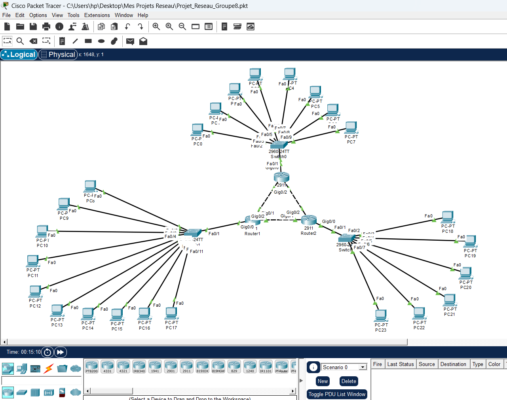

1 Topologie du réseau
Le réseau relie trois zones de postes clients (LAN) à travers trois routeurs (Router0, Router1, Router2) interconnectés en boucle, chaque zone étant desservie par un commutateur 2960-24TT.

Topologie réalisée avec Cisco Packet Tracer — Projet_Reseau_Groupe8.pkt
2 Principe de l'adressage FLSM
L'adressage a été réalisé en FLSM (Fixed Length Subnet Masking — subnetting à taille fixe) à partir du réseau
192.168.1.0/24. Contrairement au VLSM, tous les sous-réseaux ont ici le même masque, donc la même capacité
d'adresses, même si certains segments (comme les liaisons point-à-point entre routeurs) n'ont besoin que de 2 adresses.
Le réseau 192.168.1.0/24 est découpé en sous-réseaux de /27
(masque 255.255.255.224), soit 8 sous-réseaux de 30 adresses hôtes utilisables chacun.
3 Plan d'adressage
| Sous-réseau | Adresse réseau | Masque | Plage d'hôtes | Broadcast | Usage |
|---|---|---|---|---|---|
| S0 | 192.168.1.0/27 | 255.255.255.224 | .1 – .30 | 192.168.1.31 | LAN Switch0 (PC0–PC7) |
| S1 | 192.168.1.32/27 | 255.255.255.224 | .33 – .62 | 192.168.1.63 | LAN Switch gauche (PC8–PC17) |
| S2 | 192.168.1.64/27 | 255.255.255.224 | .65 – .94 | 192.168.1.95 | LAN Switch droit (PC18–PC23) |
| S3 | 192.168.1.96/27 | 255.255.255.224 | .97 – .126 | 192.168.1.127 | Liaison Router0 ↔ Router1 |
| S4 | 192.168.1.128/27 | 255.255.255.224 | .129 – .158 | 192.168.1.159 | Liaison Router0 ↔ Router2 |
| S5 | 192.168.1.160/27 | 255.255.255.224 | .161 – .190 | 192.168.1.191 | Liaison Router1 ↔ Router2 |
192.168.1.192/27 et 192.168.1.224/27 restent disponibles
pour une extension future du réseau (nouveau LAN ou nouvelle liaison).
En FLSM, chaque liaison point-à-point « gaspille » 28 adresses inutilisées (seules 2 sont nécessaires) : c'est le
principal inconvénient de cette méthode par rapport au VLSM, mais elle a l'avantage d'être simple à planifier et à gérer.
4 Passerelles des routeurs
- Router0 — Gig0/0 :
192.168.1.1(vers Switch0) · Gig0/1 :192.168.1.97· Gig0/2 :192.168.1.129 - Router1 — Gig0/0 :
192.168.1.33(vers Switch gauche) · Gig0/1 :192.168.1.98· Gig0/2 :192.168.1.161 - Router2 — Gig0/0 :
192.168.1.65(vers Switch droit) · Gig0/1 :192.168.1.130· Gig0/2 :192.168.1.162
Chaque PC obtient une adresse dans le sous-réseau de son LAN, avec pour passerelle par défaut l'adresse du routeur correspondant.